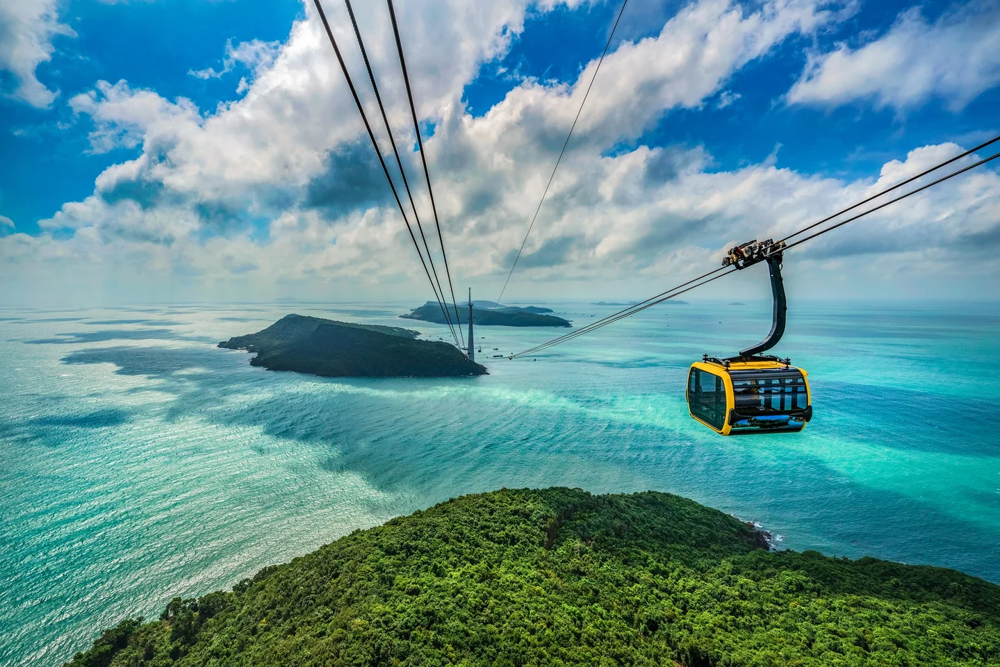

Где лучше остановиться
Лонг-Бич, Онг-Ланг, Кхем или район Сансет-Тауна? У каждого места свои особенности: пляжи, инфраструктура, расстояния и атмосфера.
ВЬЕТНАМ · ОСТРОВ ФУКУОК
На Фукуоке можно провести весь отпуск на пляже, каждый день ездить в новые места или совместить спокойный отдых с прогулками и экскурсиями. Расскажу, где лучше остановиться, какие пляжи стоит посмотреть и что важно знать до поездки.

Прежде чем выбирать отель, стоит разобраться в трёх вещах: где вы хотите жить, как планируете проводить дни и сколько времени готовы тратить на дорогу.
Лонг-Бич, Онг-Ланг, Кхем или район Сансет-Тауна? У каждого места свои особенности: пляжи, инфраструктура, расстояния и атмосфера.
Канатная дорога над морем, острова Антхой, сафари-парк, ночные рынки и небольшие рыбацкие деревни. Разберёмся, что действительно интересно и как совместить поездки с пляжным отдыхом.
Когда лучше ехать, как добраться из аэропорта, чем передвигаться по острову и какие расходы предусмотреть помимо проживания.
БЕСПЛАТНЫЙ МИНИ-ГИД
Короткий путеводитель по районам, пляжам и главным вопросам перед первой поездкой.
Необязательно планировать каждую минуту отпуска. Но для больших парков и поездок на юг острова полезно заранее продумать маршрут, чтобы не тратить лишнее время на дорогу.
.webp)
Как организовать поездку в Vinpearl Safari, сколько времени оставить на прогулку и что учитывать, если вы едете с детьми.

Поездка над морем, аквапарк и отдых на острове. Разберём, когда лучше отправляться, что входит в билет и как спланировать день без спешки.
Фото Хон Тома · Vivu Vietnam · CC BY-SA 4.0 · уменьшено и кадрировано
ПОДРОБНЫЙ ПУТЕВОДИТЕЛЬ
Пляжи и районы, транспорт, развлечения, кафе, рынки и практические советы. Собрала информацию по темам, чтобы вы могли спокойно подготовиться к отдыху и ничего важного не упустить.
Расскажите, с кем едете, на сколько дней и какой отдых вам нравится. Помогу выбрать подходящий район, разобраться с расположением отеля и составить маршрут с учётом ваших пожеланий.